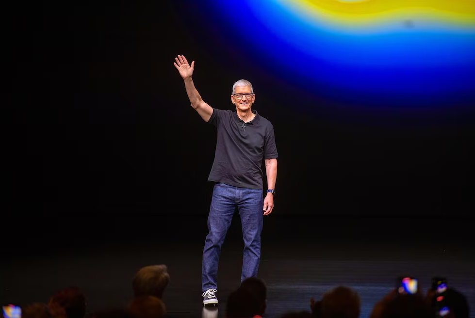

Apple y su nueva etapa tras Tim Cook

Tim Cook dejará el liderazgo de Apple como director ejecutivo para dar el paso a John Ternus como sucesor, iniciando una nueva etapa con los de Cupertino como presidente ejecutivo, tras 15 años de innovación en iPhone y consolidar la compañía como una de las más valiosas e influyentes en la actualidad. En plena celebración del 50 aniversario de Apple, la tecnológica ha decidido dar un giro de guion a su estructura ejecutiva. El actual responsable de la unidad de 'hardware', John Ternus, se convertirá en el nuevo consejero delegado de la compañía de la manzana en sustitución de Tim Cook, quien pasará a ocupar el puesto de presidente ejecutivo, a partir del 1 de septiembre. Timothy Donald Cook (1960, Alabama, Estados Unidos) es actualmente reconocido por su amplia y consolidada carrera tecnológica que, aunque alcanzó su punto álgido con Apple, comenzó mucho antes. Su primera incursión laboral comenzó de la mano del gigante International Business Machines Corporation (IBM), donde pasó 12 años ocupando cargos directivos en la división de manufactura y distribución para Norteamérica y Latinoamérica. Después, se trasladó a la compañía de equipos electrónicos de alto rendimiento Intelligent Electronics y, tras ello, saltó a la compañía de ordenadores Compaq. Cook no pisó las instalaciones de los de Cupertino hasta el año 1998, cuando fue contratado por el entonces icono de Sillicon Valley y CEO de Apple, Steve Jobs. Sus primeros pasos en Apple fueron como responsable de la cadena de suministro global, aunque también pasó por cargos como responsable de las ventas y operaciones mundiales de la compañía, así como del servicio y el soporte técnico de Apple en todos los mercados y países. Igualmente, sus logros en la tecnológica incluyen la dirección de la división Macintosh de Apple, así como propiciar un impulso clave en el desarrollo continuo de las relaciones estratégicas con distribuidores y proveedores. Durante este periodo, ya se puso frente a la dirección de la empresa en algunas ocasiones, debido a las ausencias médicas de Steve Jobs ocasionadas por su larga enfermedad de páncreas. Finalmente, Tim Cook fue nombrado CEO en agosto de 2011, momento en que cogió las riendas de la tecnológica meses antes de que la enfermedad pudiera con Jobs, que falleció el 5 de octubre, a los 56 años de edad. Desde entonces, el directivo ha lidiado con las expectativas de igualar la figura de genio tecnológico que ostentaba Jobs y, aunque quizá con otro estilo, ha conseguido consolidar Apple como una de las compañías más valiosas e influyentes del mundo en la actualidad.